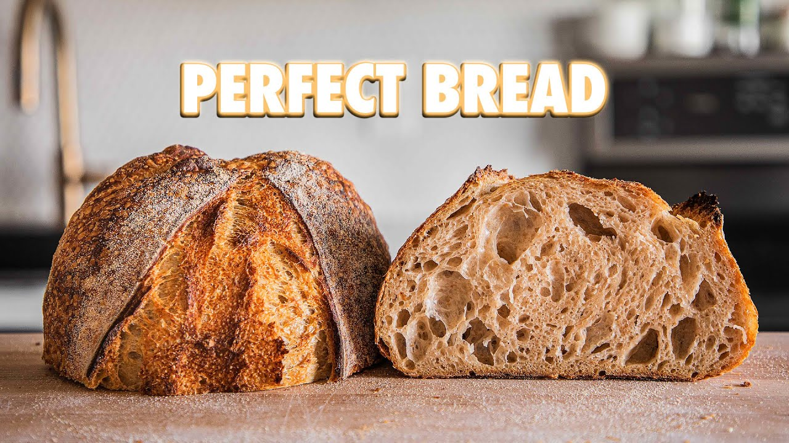

Sourdough Bread!

Description
This is Joshua Weissman's sourdough bread
recipe. It's the perfect recipe for anyone who is wanting to get into breadmaking. Sourdough bread
is not hard to make.
Ingredients
- Levain:
- 35g mature sourdough starter
- 35g whole wheat flour
- 35g all-purpose flour
- 70g room temperature water
- Dough:
- 804g good bread flour
- 75g whole wheat flour
- 740g water at 90°F (32°C), divided
- 18g fine sea salt
Steps
- In a small bowl, stir together the levain ingredients and rest in a warm area for 5 hours.
- One hour before the levain is done, make the dough. In a large bowl, mix together the bread flour and whole
wheat flour. Add 580g water to the flour mixture (keeping 100g to the side for mixing later).
- Mix until your dough comes together. Cover with plastic wrap and let it rest in a warm area for 1 hour.
- Mix your dough and levain together using a little of the reserved water to help incorporate. Rest for 20
minutes.
- Add sea salt and all of remaining water. Mix until incorporated. Slap and fold for 2 to 4 minutes or until
your dough is smooth and begins to catch some air. Rest 15 minutes in the same warm area.
- Perform 6 sets of stretch and folds spaced out by 15 minutes for the first three, then 30 minutes for the
last three. Place the dough back in the warm area for each rest.
- Let your dough rest for a final 1/2 hours, undisturbed.
- Dump out and divide dough into 2 even pieces. Preshape each piece into a light boule and rest for 5 to 10
minutes.
- Shape each ball dough into a batard, and place into bannetons dusted with either rice flour or all-purpose
flour.
- Refrigerate overnight.
- Preheat cast-iron combo cooker to 500°F (260°C) for 1 hour in the oven.
- Carefully place a dusted loaf into the hot pan, score the top, and place the larger lid on top. Bake for 20
minutes
- Remove the top form the combo cooker and lower the oven temperature to 450°F (230°C). Bake for an additional
20 to 30 minutes, or until the loaf is a deep brown color.
- Remove the bread and cool on a wire rack until room temperature. Repeat with the other loaf.